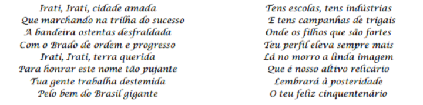

Bandeira de Irati
A Bandeira do município foi idealizada por José Maria Orreda e Doraci Castagnoli, sendo instituída pela Prefeitura Municipal em 1967, por ocasião das comemorações do 60º aniversário do município.A bandeira consiste em um retângulo branco, contendo ao centro o brasão de armas, linhas azuis e douradas em cada margem se prolongam até a extremidade, no sentido vertical, ao lado do brasão, quatro faixas douradas paralelas, que representam o distrito sede e os três distritos judiciários que integram o município: Guamirim, Gonçalves Júnior e Itapará.
Brasão de Irati
O Brasão de Armas de Irati foi desenhado e idealizado por José Maria Orreda e instituído pela Prefeitura em 1967 por ocasião dos festejos de 60 anos do município. O brasão compõe-se de campo retangular branco, alongado no sentido vertical e delimitado por linhas azuis, com a extremidade inferior arredondado. Tem no alto, em cinza, torre de cinco pontas que, em heráldica, significa cidade e município. Ao centro, em verde e marrom, a figura do pinheiro, um ciclo da economia de Irati; à direita, em verde, ramo da erva-mate, outro ciclo da economia; à esquerda, em amarelo, ramo de trigo, significando a produção agrícola, fonte de riqueza e valores espirituais. Embaixo, faixa azul une os ramos da erva-mate e o trigo, contendo a data de instalação do município, 15 de julho de 1907, em preto.
Hino Oficial de Irati
O Hino do Cinquentenário do Município de Irati foi escrito pelo Sr. Silvio Francisco Ribeiro. Foi oficializado como Hino do Município através da lei nº. 571 de 05 de abril de 1983. Ele foi adotado desde sua primeira gravação em 1957, pelo coral Nossa Senhora da Luz, em 1998 músicos iratienses gravaram uma nova versão do Hino.